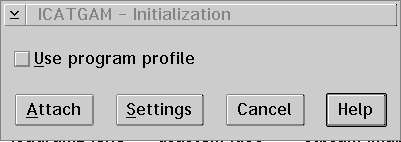

Using the Initialization Window
Use the Initialization window to attach to the OS2KRNL.
To use this window:
- Select the Use program profile check box if
you want to restore the windows and breakpoints when debugging a program
more than once.
- Select the Attach push button to attach to the OS2KRNL.
- Select the Settings push button to display the Debugger
Properties window, which allows you to select how threads and source files
initially display and set environment variables. See Debugger
properties... for more information.
[Back: Starting the Debugger from OS/2]
[Next: Ending the Debugging Session]